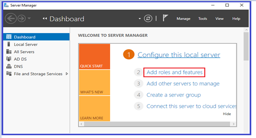
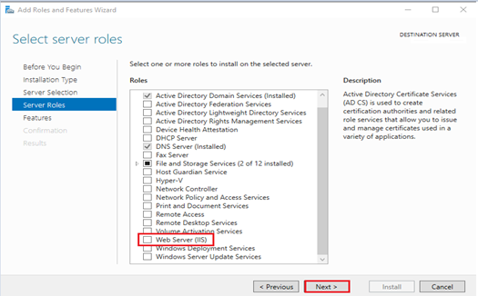
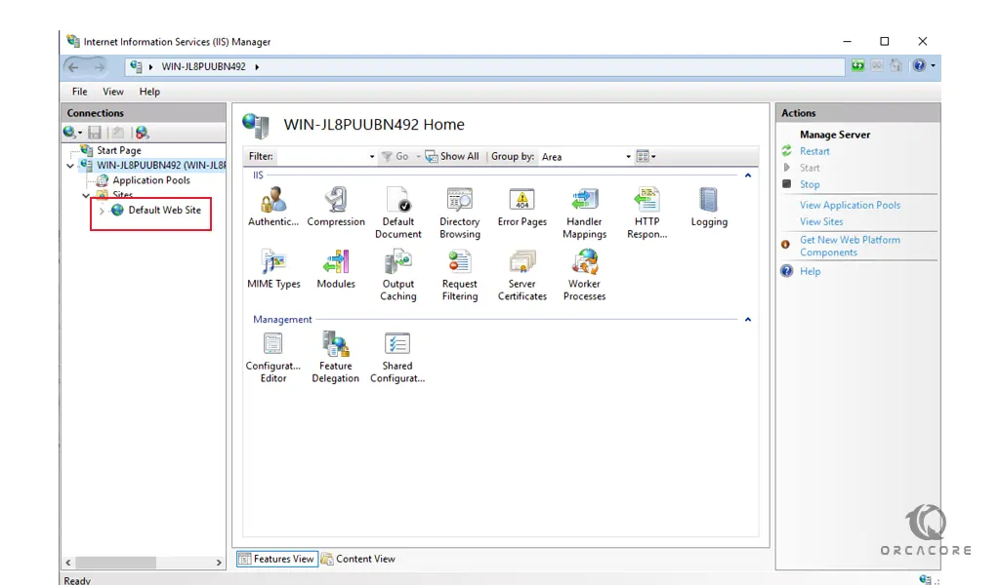
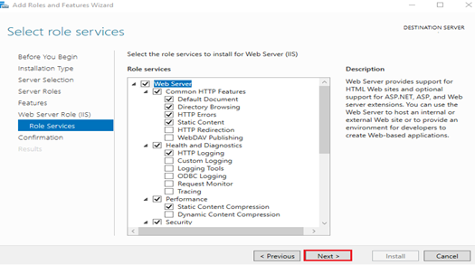
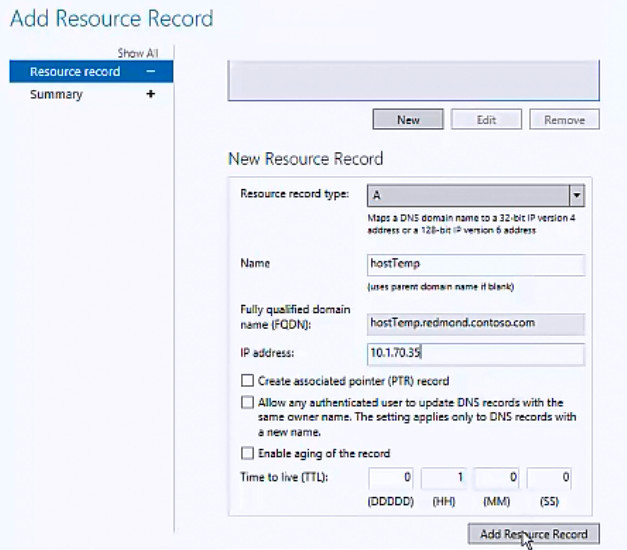
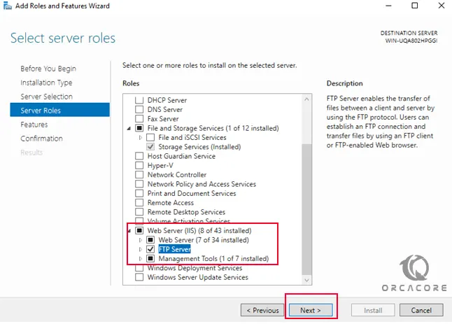
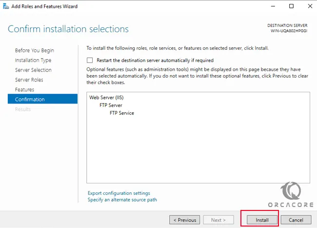
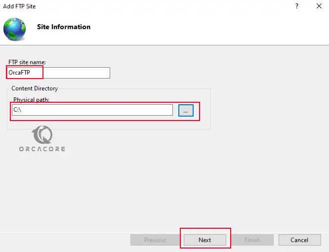
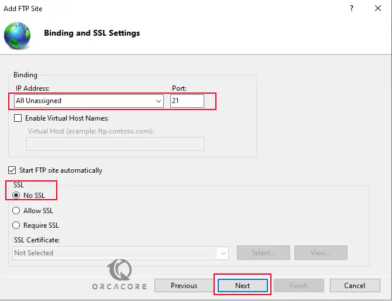
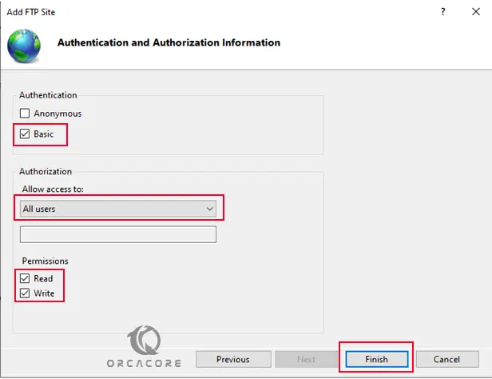

Web- és FTP-szerver konfiguráció
Windows Server 2022 és IIS 10.0 alapú webszerver-környezet kialakításának, konfigurálásának és ellenőrzésének dokumentációja.
IIS szerepkör telepítése
A webszerver-szolgáltatás előkészítése Windows Server környezetben.
1.1. A Server Manager megnyitása
A Server Manager felületén az Add Roles and Features varázsló segítségével lehet új kiszolgálói szerepköröket telepíteni. A telepítés előtt ellenőrizni kell, hogy a megfelelő szerver van kiválasztva.

1.2. Web Server (IIS) kiválasztása
A szerepkörök listájában ki kell választani a Web Server (IIS) elemet. A szükséges kezelőeszközöket és függőségeket a telepítő felajánlja.

Weboldal és DNS konfiguráció
Az alapértelmezett webhely ellenőrzése, saját tesztoldal beállítása és DNS-konfiguráció.
2.1. Alapértelmezett webhely
Az IIS Managerben található Default Web Site alapértelmezett HTTP-kötése általában a 80-as portot használja. A webhely állapota és fizikai könyvtára a kezelőfelületen ellenőrizhető.

2.2. Egyedi tesztoldal létrehozása
A webhely gyökérkönyvtárába elhelyezhető egy egyszerű index.html fájl. A fájl módosítása után böngészőből ellenőrizhető, hogy az IIS a saját weboldalt jeleníti-e meg.

2.3. DNS A-rekord beállítása
A DNS-kezelőben A-rekord rendelhető a választott domainnévhez. Ez a rekord a domain nevet a webszerver IPv4-címére irányítja.
Név: www.pelda.local
Cél: szerver IPv4-címe

FTP szerver konfigurációja
Az FTP-szolgáltatás telepítése, a kapcsolati beállítások és a jogosultságok kezelése.
3.1. FTP-szolgáltatás telepítése
Az IIS szerepkör-szolgáltatásai között az FTP Server elemeit kell engedélyezni. Ezután az IIS Managerben létrehozható egy FTP Site, amelyhez meg kell adni a tartalom könyvtárát és a kapcsolódási beállításokat.


3.2. Kötések és hitelesítés
A kapcsolati beállításoknál meg kell adni az IP-címet, a portot és szükség esetén az SSL használatát. Az Authentication résznél kiválasztható az Anonymous vagy a Basic hitelesítés.

FTP kapcsolat tesztelése
A kliensoldali csatlakozás és az adatátvitel ellenőrzése.
4.1. FTP-kötés beállítása
Az FTP Site varázslóban meg kell adni a kiszolgáló IP-címét, a 21-es portot, valamint az SSL használatát. A beállítások után a szolgáltatás elindítható.

4.2. Hitelesítés és jogosultságok
A Basic hitelesítés felhasználói fiókot igényel. Csak a szükséges felhasználóknak érdemes olvasási vagy írási jogosultságot adni. A hozzáféréseket az Authorization Rules résznél lehet szabályozni.

Ellenőrzés és összegzés
A konfiguráció fontosabb ellenőrzési pontjai.
A dokumentáció bemutatja egy Windows Server alapú webszerver és FTP-szolgáltatás kialakításának főbb lépéseit.
A tényleges működés igazolásához az alábbi ellenőrzéseket kell elvégezni:
- Az IIS szerepkör és a szükséges szolgáltatások telepítve vannak.
- A webhely fut, és a tesztoldal böngészőből megnyitható.
- A DNS-rekord a megfelelő szervercímre mutat.
- Az FTP-kapcsolat a beállított hitelesítéssel létrejön.
- A feltöltés és letöltés a jogosultságoknak megfelelően működik.